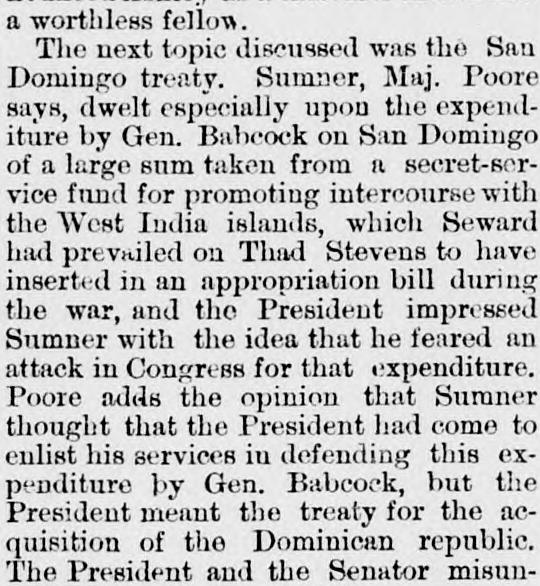
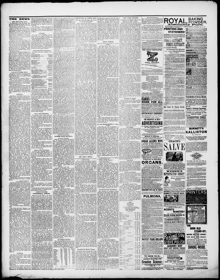

Babcock on San Domingo of a large sum taken from a secret-service fund for promoting intercourse with the West India islandsBabcock en Santo Domingo de una gran suma tomada de un fondo del servicio secreto para promover el comercio con las islas de las Indias Occidentales
Fulton Journal. City of Fulton, Ill., November 9, 1877. Page 3. Published by W.C. Snyder. A weekly newspaper.Fulton Journal. City of Fulton, Ill., 9 de noviembre de 1877. Página 3. Publicado por W.C. Snyder. Periódico semanal. View the originalVer el original


See the full pageVer la página completaMajor Poore's statement clarifies a historical misunderstanding between President Grant and Senator Sumner regarding a past expenditure by General Babcock involving secret-service funds and the proposed treaty for the acquisition of the Dominican Republic. While Sumner believed the President sought his defense of a cash and weaponry expenditure, the President was referring to the annexation treaty itself. Additionally, the newspaper briefly reported that General Pope, the Post Commander at Fort Leavenworth, was assaulted at the Leavenworth races.A partir del fragmento facilitado, la declaración del mayor Poore aclara una secular confusión entre el mandatario Grant y el legislador Sumner a propósito de un pretérito desembolso de caudales reservados por parte del general Babcock y el proyectado convenio para la anexión de la República Dominicana. Mientras Sumner creía que se requería su concurso para legitimar una entrega de fondos y pertrechos, el dignatario se refería al tratado anexionista en sí. Por añadidura, el diario mencionó someramente que el general Pope, jefe de plaza en Fort Leavenworth, sufrió una agresión durante las carreras de dicha localidad.
FULL TEXT:TEXTO COMPLETO:
GRANT—SUMNER.GRANT—SUMNER.
Maj. Ben Perley Poore Rises to an Explanation.El mayor Ben Perley Poore se levanta a dar una explicación.
[Washington Cor. Chicago Tribune.][Corresponsalía de Washington del Chicago Tribune.]
Maj. Ben Perley Poore has at last given to the world an authentic statement of the causes of the estrangement between Sumner and President Grant. This explanation has been called out by the recent statements of Gen. Grant, Wendell Phillips, ex-Secretary Fish, and John W. Forney. Maj. Poore was the guest of Sumner at the time of the estrangement, and heard all of the conversation between President Grant and Sumner. Maj. Poore’s story, in substance, is this: The removal of James M. Ashley, ex-Congressman from Ohio, from the Governorship of Montana, and the appointment in his place of Col. Potts, which had just happened, was the topic of table conversation. A letter just received from Ashley, protesting against the change, had been read at table, when the servant announced that the President was at the door. He was received, and in the course of the conversation the letter from Ashley was handed to the President. The latter became immediately excited, and denounced Ashley as a mischief-maker and a worthless fellow.El mayor Ben Perley Poore ha dado al fin al mundo una declaración auténtica de las causas del alejamiento entre Sumner y el presidente Grant. Esta explicación ha sido provocada por las recientes declaraciones del general Grant, Wendell Phillips, el ex Secretario Fish, y John W. Forney. El mayor Poore fue huésped de Sumner en el momento del alejamiento, y oyó toda la conversación entre el presidente Grant y Sumner. La historia del mayor Poore, en sustancia, es esta: La remoción de James M. Ashley, ex Congresista de Ohio, de la Gobernación de Montana, y el nombramiento en su lugar del coronel Potts, que acababa de suceder, fue el tema de conversación en la mesa. Una carta recién recibida de Ashley, protestando contra el cambio, había sido leída en la mesa, cuando el sirviente anunció que el Presidente estaba en la puerta. Fue recibido, y en el curso de la conversación la carta de Ashley fue entregada al Presidente. Este último se excitó inmediatamente, y denunció a Ashley como un hacedor de daño y un sujeto sin valor.
The next topic discussed was the San Domingo treaty. Sumner, Maj. Poore says, dwelt especially upon the expenditure by Gen. Babcock on San Domingo of a large sum taken from a secret-service fund for promoting intercourse with the West India islands, which Seward had prevailed on Thad Stevens to have inserted in an appropriation bill during the war, and the President impressed Sumner with the idea that he feared an attack in Congress for that expenditure. Poore adds the opinion that Sumner thought that the President had come to enlist his services in defending this expenditure by Gen. Babcock, but the President meant the treaty for the acquisition of the Dominican republic. The President and the Senator misunderstood each other. After a while the President promised to send Gen. Babcock to call on the Senator the next day, with copies of the papers, and left. As Mr. Sumner escorted him to the door he told him that he was a Republican, a supporter of the Republican administration, and that he should sustain the administration in this case if he possibly could, after he had examined the papers. He meant, sustain the expenditure of $100,000 in cash, $50,000 in a light battery and muskets, purchased at New York, but the President meant the treaty.El siguiente tema discutido fue el tratado de Santo Domingo. Sumner, dice el mayor Poore, se detuvo especialmente en el gasto por el general Babcock en Santo Domingo de una gran suma tomada de un fondo del servicio secreto para promover el comercio con las islas de las Indias Occidentales, que Seward había persuadido a Thad Stevens de insertar en un proyecto de asignaciones durante la guerra, y el Presidente impresionó a Sumner con la idea de que temía un ataque en el Congreso por ese gasto. Poore añade la opinión de que Sumner pensó que el Presidente había venido a enlistar sus servicios en la defensa de este gasto por el general Babcock, pero el Presidente se refería al tratado para la adquisición de la República dominicana. El Presidente y el Senador se malentendieron mutuamente. Después de un rato el Presidente prometió enviar al general Babcock a visitar al Senador al día siguiente, con copias de los documentos, y se fue. Mientras el Sr. Sumner lo acompañaba a la puerta le dijo que era un Republicano, un partidario de la administración Republicana, y que sostendría a la administración en este caso si posiblemente pudiera, después de haber examinado los documentos. Se refería a sostener el gasto de $100,000 en efectivo, $50,000 en una batería ligera y mosquetes, comprados en Nueva York, pero el Presidente se refería al tratado.
Maj. Poore’s statement thus removes a grave historical doubt, and seems to set at rest the stories recently published of the cause of the difficulty between Grant and Sumner.La declaración del mayor Poore así remueve una grave duda histórica, y parece poner fin a las historias recientemente publicadas sobre la causa de la dificultad entre Grant y Sumner.
This collection gathers the coverage of the Dominican Republic in the American press, in the order it was published.Esta colección reúne la cobertura de la República Dominicana en la prensa estadounidense, en el orden en que se publicaron.